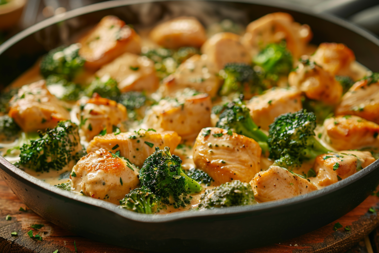

Рецепт курицы с брокколи
Вернуться на главную

Сливочная курица с брокколи, 42 гр белка и много клетчатки
КБЖУ на порцию: 558/42/17/55
Ингридиенты
* ингридиенты для 3-х порций
- 450 гр курицы
- 300 гр брокколи (можно замиксовать её со стручковой фасолью)
- 210 гр риса басмати
- 3 ст. ложки оливкового масла
- 90 гр лёгкого творожного сыра
- немного воды
- 1 ч. ложка крахмала кукурузного
- чеснок
- соль
- итальянские травы
Этапы приготовления
- Обжарить с маслом курицу до белого состояния
- Добавить овощи и тушить под крышкой пока овощи не станут мягкими
- Добавить соль, специи. Перемешать
- Влить соус в самом конце, накрыть крышкой
- Отварить рис
- Собрать блюдо: рис + курица с брокколи
Приятного аппетита!